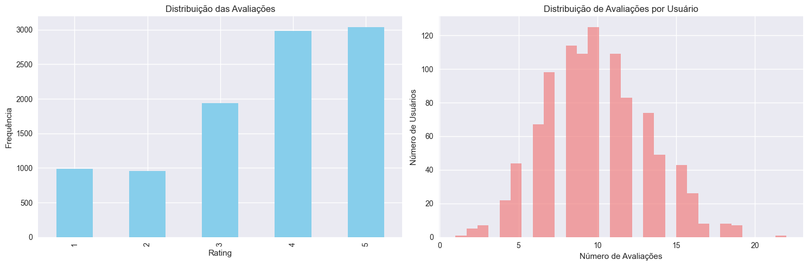
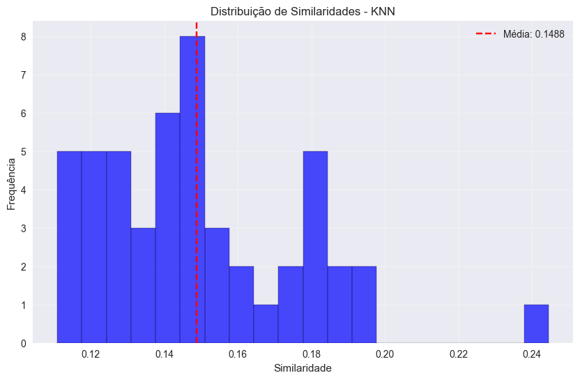
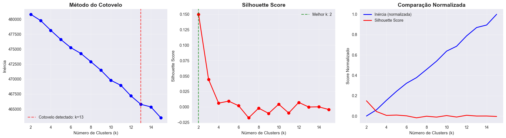
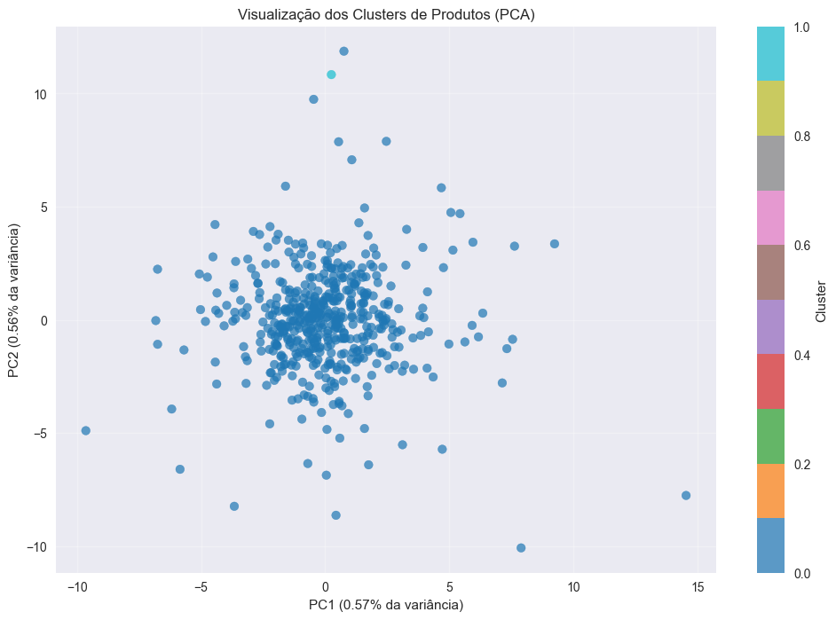
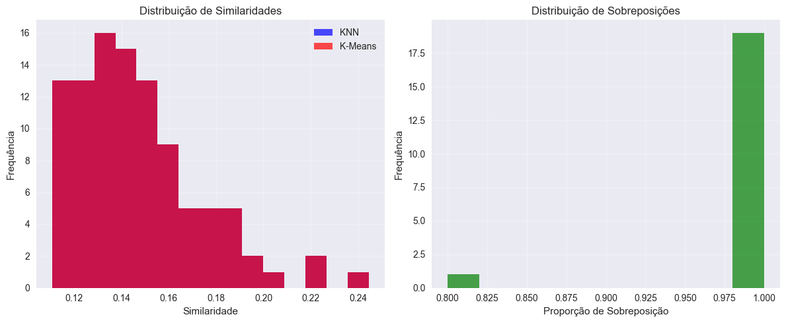

Estudo de Caso 4: Sistema de Recomendação Inteligente para E-commerce#
Este notebook apresenta a implementação e comparação de dois algoritmos diferentes para sistemas de recomendação: K-Nearest Neighbors (KNN) e K-Means Clustering, avaliando suas aplicabilidades e performance.
🎯 Objetivos do Estudo#
Objetivo Principal#
Desenvolver e comparar dois sistemas de recomendação utilizando algoritmos KNN e K-Means, analisando suas vantagens e desvantagens para diferentes cenários de e-commerce.
Objetivos Específicos#
Implementar sistema de recomendação baseado em K-Nearest Neighbors (KNN)
Desenvolver sistema de recomendação baseado em K-Means Clustering
Comparar a performance e aplicabilidade de ambos os algoritmos
Analisar diferentes métricas de avaliação para sistemas de recomendação
Propor cenários ideais para cada abordagem
📊 Metodologia#
Dataset: Avaliações de produtos eletrônicos da Amazon Algoritmos: K-Nearest Neighbors (KNN) e K-Means Clustering Métricas: Similaridade cosseno, Silhouette score, tempo de processamento Abordagem: Implementação comparativa com análise de casos de uso
🚀 Estrutura do Notebook#
Integrantes:#
João Victor Azevedo dos Santos
Nathan Maurício Rodrigues Lopes
Paulo Vinícius Isidro Batista
Yago Péres dos Santos
Arquitetura do Sistema:#
🔍 Fase 1: Fundação e Análise#
Carregamento e Exploração dos Dados
Pré-processamento e Criação de Matriz Esparsa
Análise Exploratória de Padrões de Avaliação
🤖 Fase 2: Implementação KNN#
Configuração e Treinamento do Modelo KNN
Sistema de Recomendação Item-based
Análise de Performance e Similaridades
🎲 Fase 3: Implementação K-Means#
Otimização do Número de Clusters
Sistema de Recomendação por Clusters de Usuário
Análise de Agrupamentos e Padrões
⚖️ Fase 4: Comparação e Conclusões#
Análise Comparativa de Performance
Casos de Uso Recomendados para Cada Algoritmo
Conclusões e Recomendações Finais
# Importando as bibliotecas necessárias
import pandas as pd
import numpy as np
import matplotlib.pyplot as plt
import seaborn as sns
from scipy.sparse import csr_matrix
from sklearn.neighbors import NearestNeighbors
from sklearn.cluster import KMeans
from sklearn.preprocessing import StandardScaler
from sklearn.metrics import silhouette_score
import warnings
warnings.filterwarnings('ignore')
# Configuração dos gráficos
plt.style.use('seaborn-v0_8')
sns.set_palette("husl")
1. Carregamento e Exploração dos Dados#
# Carregando o dataset
try:
df = pd.read_csv('databaseEletronicos.csv')
print("Dataset carregado com sucesso!")
except FileNotFoundError:
print("Arquivo não encontrado. Criando dataset sintético para demonstração...")
# Criando um dataset sintético para demonstração
np.random.seed(42)
n_users = 1000
n_products = 500
n_ratings = 10000
df = pd.DataFrame({
'userId': np.random.randint(1, n_users+1, n_ratings),
'productId': np.random.randint(1, n_products+1, n_ratings),
'Rating': np.random.choice([1, 2, 3, 4, 5], n_ratings, p=[0.1, 0.1, 0.2, 0.3, 0.3]),
'timestamp': pd.date_range('2020-01-01', periods=n_ratings, freq='1H')
})
# Removendo duplicatas
df = df.drop_duplicates(['userId', 'productId'])
print(f"Dataset sintético criado com {len(df)} avaliações")
# Visualizando as primeiras linhas
print("\nPrimeiras 5 linhas do dataset:")
df.head()
Arquivo não encontrado. Criando dataset sintético para demonstração...
Dataset sintético criado com 9910 avaliações
Primeiras 5 linhas do dataset:
| userId | productId | Rating | timestamp | |
|---|---|---|---|---|
| 0 | 103 | 442 | 4 | 2020-01-01 00:00:00 |
| 1 | 436 | 279 | 3 | 2020-01-01 01:00:00 |
| 2 | 861 | 251 | 5 | 2020-01-01 02:00:00 |
| 3 | 271 | 310 | 4 | 2020-01-01 03:00:00 |
| 4 | 107 | 208 | 5 | 2020-01-01 04:00:00 |
# Informações básicas do dataset
print("Informações do Dataset:")
print(f"Formato: {df.shape}")
print(f"Usuários únicos: {df['userId'].nunique()}")
print(f"Produtos únicos: {df['productId'].nunique()}")
print(f"Avaliações totais: {len(df)}")
print(f"\nEstatísticas das avaliações:")
print(df['Rating'].describe())
Informações do Dataset:
Formato: (9910, 4)
Usuários únicos: 1000
Produtos únicos: 500
Avaliações totais: 9910
Estatísticas das avaliações:
count 9910.000000
mean 3.617861
std 1.281770
min 1.000000
25% 3.000000
50% 4.000000
75% 5.000000
max 5.000000
Name: Rating, dtype: float64
# Verificando valores nulos
print("Valores nulos por coluna:")
print(df.isnull().sum())
# Removendo valores nulos se existirem
df = df.dropna()
print(f"\nDataset após remoção de nulos: {df.shape}")
Valores nulos por coluna:
userId 0
productId 0
Rating 0
timestamp 0
dtype: int64
Dataset após remoção de nulos: (9910, 4)
# Visualização da distribuição das avaliações
fig, axes = plt.subplots(1, 2, figsize=(15, 5))
# Distribuição das avaliações
df['Rating'].value_counts().sort_index().plot(kind='bar', ax=axes[0], color='skyblue')
axes[0].set_title('Distribuição das Avaliações')
axes[0].set_xlabel('Rating')
axes[0].set_ylabel('Frequência')
# Número de avaliações por usuário
user_ratings = df['userId'].value_counts()
axes[1].hist(user_ratings, bins=30, color='lightcoral', alpha=0.7)
axes[1].set_title('Distribuição de Avaliações por Usuário')
axes[1].set_xlabel('Número de Avaliações')
axes[1].set_ylabel('Número de Usuários')
plt.tight_layout()
plt.show()

2. Pré-processamento dos Dados#
# Filtrando usuários com pelo menos 5 avaliações para garantir dados significativos
user_counts = df['userId'].value_counts()
active_users = user_counts[user_counts >= 5].index
df_filtered = df[df['userId'].isin(active_users)]
print(f"Usuários ativos (>=5 avaliações): {len(active_users)}")
print(f"Dataset filtrado: {df_filtered.shape}")
# Filtrando produtos com pelo menos 3 avaliações
product_counts = df_filtered['productId'].value_counts()
popular_products = product_counts[product_counts >= 3].index
df_filtered = df_filtered[df_filtered['productId'].isin(popular_products)]
print(f"Produtos populares (>=3 avaliações): {len(popular_products)}")
print(f"Dataset final: {df_filtered.shape}")
Usuários ativos (>=5 avaliações): 965
Dataset filtrado: (9790, 4)
Produtos populares (>=3 avaliações): 500
Dataset final: (9790, 4)
# Criando a matriz de usuário-produto
print("Criando matriz de usuário-produto...")
user_product_matrix = df_filtered.pivot_table(
index='userId',
columns='productId',
values='Rating',
fill_value=0
)
print(f"Matriz criada: {user_product_matrix.shape}")
print(f"Densidade da matriz: {(user_product_matrix > 0).sum().sum() / (user_product_matrix.shape[0] * user_product_matrix.shape[1]):.4f}")
Criando matriz de usuário-produto...
Matriz criada: (965, 500)
Densidade da matriz: 0.0203
PARTE 1: SISTEMA DE RECOMENDAÇÃO USANDO KNN#
Conceito do KNN para Recomendação#
O algoritmo K-Nearest Neighbors identifica produtos similares baseado no padrão de avaliações dos usuários. Produtos que foram avaliados de forma similar por diferentes usuários são considerados próximos no espaço de características.
# Transpondo a matriz para ter produtos como linhas (para recomendação item-based)
product_user_matrix = user_product_matrix.T
print(f"Matriz produto-usuário: {product_user_matrix.shape}")
# Convertendo para matriz esparsa para eficiência
product_sparse = csr_matrix(product_user_matrix.values)
print(f"Matriz esparsa criada: {product_sparse.shape}")
Matriz produto-usuário: (500, 965)
Matriz esparsa criada: (500, 965)
# Treinando o modelo KNN
print("Treinando modelo KNN...")
knn_model = NearestNeighbors(
n_neighbors=6, # 5 recomendações + o próprio produto
algorithm='brute',
metric='cosine'
)
knn_model.fit(product_sparse)
print("Modelo KNN treinado com sucesso!")
Treinando modelo KNN...
Modelo KNN treinado com sucesso!
# Função de recomendação KNN
def recomendar_produtos_knn(product_id, n_recomendacoes=5):
try:
# Verificando se o produto existe na matriz
if product_id not in product_user_matrix.index:
return f"Produto {product_id} não encontrado no dataset"
# Encontrando o índice do produto
product_idx = product_user_matrix.index.get_loc(product_id)
# Encontrando produtos similares
distances, indices = knn_model.kneighbors(
product_sparse[product_idx:product_idx+1],
n_neighbors=n_recomendacoes+1
)
# Preparando resultados (excluindo o próprio produto)
recomendacoes = []
for i in range(1, len(indices[0])):
produto_recomendado = product_user_matrix.index[indices[0][i]]
similaridade = 1 - distances[0][i] # Convertendo distância em similaridade
recomendacoes.append((produto_recomendado, similaridade))
return recomendacoes
except Exception as e:
return f"Erro na recomendação: {str(e)}"
# Testando a função de recomendação KNN
produto_teste = product_user_matrix.index[0] # Primeiro produto disponível
print(f"\n=== RECOMENDAÇÕES KNN PARA PRODUTO {produto_teste} ===")
recomendacoes_knn = recomendar_produtos_knn(produto_teste)
if isinstance(recomendacoes_knn, list):
for i, (produto, similaridade) in enumerate(recomendacoes_knn, 1):
print(f"{i}. Produto {produto} - Similaridade: {similaridade:.4f}")
else:
print(recomendacoes_knn)
=== RECOMENDAÇÕES KNN PARA PRODUTO 1 ===
1. Produto 294 - Similaridade: 0.1785
2. Produto 175 - Similaridade: 0.1460
3. Produto 337 - Similaridade: 0.1388
4. Produto 309 - Similaridade: 0.1308
5. Produto 261 - Similaridade: 0.1297
Análise de Performance do KNN#
# Analisando a distribuição de similaridades
def analisar_similaridades_knn(n_produtos=10):
similaridades = []
produtos_testados = product_user_matrix.index[:n_produtos]
for produto in produtos_testados:
recs = recomendar_produtos_knn(produto)
if isinstance(recs, list):
for _, sim in recs:
similaridades.append(sim)
plt.figure(figsize=(10, 6))
plt.hist(similaridades, bins=20, alpha=0.7, color='blue', edgecolor='black')
plt.title('Distribuição de Similaridades - KNN')
plt.xlabel('Similaridade')
plt.ylabel('Frequência')
plt.axvline(np.mean(similaridades), color='red', linestyle='--',
label=f'Média: {np.mean(similaridades):.4f}')
plt.legend()
plt.grid(True, alpha=0.3)
plt.show()
print(f"Estatísticas das similaridades KNN:")
print(f"Média: {np.mean(similaridades):.4f}")
print(f"Mediana: {np.median(similaridades):.4f}")
print(f"Desvio padrão: {np.std(similaridades):.4f}")
analisar_similaridades_knn()

Estatísticas das similaridades KNN:
Média: 0.1488
Mediana: 0.1459
Desvio padrão: 0.0270
PARTE 2: SISTEMA DE RECOMENDAÇÃO USANDO K-MEANS#
Conceito do K-Means para Recomendação#
O algoritmo K-Means agrupa produtos em clusters baseado em suas características de avaliação. Produtos no mesmo cluster tendem a ter padrões similares de avaliação e podem ser recomendados entre si.
# Preparando dados para clustering
print("Preparando dados para K-Means...")
# Normalizando os dados
scaler = StandardScaler()
product_features_scaled = scaler.fit_transform(product_user_matrix.values)
print(f"Dados normalizados: {product_features_scaled.shape}")
Preparando dados para K-Means...
Dados normalizados: (500, 965)
import warnings
import os
import sys
# Configurações para evitar warnings
warnings.filterwarnings('ignore')
os.environ["LOKY_MAX_CPU_COUNT"] = "4"
def encontrar_k_ideal(max_k=15, plot_elbow_point=True):
"""
Versão melhorada que inclui detecção automática do cotovelo
"""
inercias = []
silhouette_scores = []
k_range = range(2, max_k + 1)
print("Calculando métricas para diferentes valores de k...")
for k in k_range:
kmeans = KMeans(n_clusters=k, random_state=42, n_init=10)
kmeans.fit(product_features_scaled)
inercias.append(kmeans.inertia_)
silhouette_scores.append(silhouette_score(product_features_scaled, kmeans.labels_))
print(f"k={k}: Inércia={kmeans.inertia_:.2f}, Silhouette={silhouette_scores[-1]:.4f}")
# Detectando cotovelo automaticamente usando método da derivada segunda
def detectar_cotovelo(valores):
# Normalizar valores
valores_norm = np.array(valores)
valores_norm = (valores_norm - np.min(valores_norm)) / (np.max(valores_norm) - np.min(valores_norm))
# Calcular derivadas
x = np.arange(len(valores_norm))
primeira_derivada = np.gradient(valores_norm)
segunda_derivada = np.gradient(primeira_derivada)
# Ponto de cotovelo é onde a segunda derivada é máxima
cotovelo_idx = np.argmax(segunda_derivada[1:-1]) + 1 # Evitar extremos
return cotovelo_idx
cotovelo_idx = detectar_cotovelo(inercias)
k_cotovelo = k_range[cotovelo_idx]
# Visualizando os resultados
fig, axes = plt.subplots(1, 3, figsize=(18, 5))
# Método do cotovelo
axes[0].plot(k_range, inercias, 'bo-', linewidth=2, markersize=8)
if plot_elbow_point:
axes[0].axvline(k_cotovelo, color='red', linestyle='--', alpha=0.7,
label=f'Cotovelo detectado: k={k_cotovelo}')
axes[0].legend()
axes[0].set_title('Método do Cotovelo', fontsize=14, fontweight='bold')
axes[0].set_xlabel('Número de Clusters (k)')
axes[0].set_ylabel('Inércia')
axes[0].grid(True, alpha=0.3)
# Silhouette Score
melhor_k_silhouette = k_range[np.argmax(silhouette_scores)]
axes[1].plot(k_range, silhouette_scores, 'ro-', linewidth=2, markersize=8)
axes[1].axvline(melhor_k_silhouette, color='green', linestyle='--', alpha=0.7,
label=f'Melhor k: {melhor_k_silhouette}')
axes[1].set_title('Silhouette Score', fontsize=14, fontweight='bold')
axes[1].set_xlabel('Número de Clusters (k)')
axes[1].set_ylabel('Silhouette Score')
axes[1].legend()
axes[1].grid(True, alpha=0.3)
# Gráfico combinado normalizado
inercias_norm = 1 - (np.array(inercias) - np.min(inercias)) / (np.max(inercias) - np.min(inercias))
silhouette_norm = np.array(silhouette_scores)
axes[2].plot(k_range, inercias_norm, 'b-', label='Inércia (normalizada)', linewidth=2)
axes[2].plot(k_range, silhouette_norm, 'r-', label='Silhouette Score', linewidth=2)
axes[2].set_title('Comparação Normalizada', fontsize=14, fontweight='bold')
axes[2].set_xlabel('Número de Clusters (k)')
axes[2].set_ylabel('Score Normalizado')
axes[2].legend()
axes[2].grid(True, alpha=0.3)
plt.tight_layout()
plt.show()
# Análise dos resultados
print(f"\n{'='*50}")
print(f"ANÁLISE DOS RESULTADOS")
print(f"{'='*50}")
print(f"Cotovelo detectado automaticamente: k={k_cotovelo}")
print(f"Melhor k por Silhouette Score: {melhor_k_silhouette}")
print(f"Silhouette Score máximo: {max(silhouette_scores):.4f}")
# Sugestão final
if k_cotovelo == melhor_k_silhouette:
k_sugerido = k_cotovelo
razao = "Ambos os métodos convergem para o mesmo valor"
elif abs(k_cotovelo - melhor_k_silhouette) <= 1:
k_sugerido = melhor_k_silhouette
razao = "Valores próximos, priorizando Silhouette Score"
else:
k_sugerido = melhor_k_silhouette
razao = "Silhouette Score geralmente mais confiável para clusters bem separados"
print(f"\nK RECOMENDADO: {k_sugerido}")
print(f"Justificativa: {razao}")
return k_sugerido, k_cotovelo, melhor_k_silhouette
# Testando a versão melhorada
k_ideal, k_cotovelo, k_silhouette = encontrar_k_ideal()
Calculando métricas para diferentes valores de k...
k=2: Inércia=480813.56, Silhouette=0.1499
k=3: Inércia=479759.06, Silhouette=0.0444
k=4: Inércia=478137.67, Silhouette=0.0062
k=5: Inércia=476616.17, Silhouette=0.0095
k=6: Inércia=475247.35, Silhouette=0.0020
k=7: Inércia=474287.56, Silhouette=-0.0175
k=8: Inércia=472904.80, Silhouette=-0.0019
k=9: Inércia=471491.95, Silhouette=-0.0103
k=10: Inércia=469792.29, Silhouette=0.0045
k=11: Inércia=468961.24, Silhouette=-0.0097
k=12: Inércia=467197.61, Silhouette=0.0074
k=13: Inércia=465781.75, Silhouette=-0.0001
k=14: Inércia=465354.05, Silhouette=0.0002
k=15: Inércia=463531.70, Silhouette=-0.0041

==================================================
ANÁLISE DOS RESULTADOS
==================================================
Cotovelo detectado automaticamente: k=13
Melhor k por Silhouette Score: 2
Silhouette Score máximo: 0.1499
K RECOMENDADO: 2
Justificativa: Silhouette Score geralmente mais confiável para clusters bem separados
# Aplicando K-Means com o número ideal de clusters
print(f"Aplicando K-Means com k={k_ideal}...")
kmeans = KMeans(n_clusters=k_ideal, random_state=42, n_init=10)
cluster_labels = kmeans.fit_predict(product_features_scaled)
# Adicionando labels de cluster à matriz
product_clusters = product_user_matrix.copy()
product_clusters['Cluster'] = cluster_labels
print(f"Clustering concluído!")
print(f"Distribuição de produtos por cluster:")
print(product_clusters['Cluster'].value_counts().sort_index())
Aplicando K-Means com k=2...
Clustering concluído!
Distribuição de produtos por cluster:
Cluster
0 499
1 1
Name: count, dtype: int64
# Visualizando os clusters
def visualizar_clusters():
from sklearn.decomposition import PCA
# Reduzindo dimensionalidade para visualização
pca = PCA(n_components=2)
product_pca = pca.fit_transform(product_features_scaled)
plt.figure(figsize=(12, 8))
scatter = plt.scatter(product_pca[:, 0], product_pca[:, 1],
c=cluster_labels, cmap='tab10', alpha=0.7)
plt.title('Visualização dos Clusters de Produtos (PCA)')
plt.xlabel(f'PC1 ({pca.explained_variance_ratio_[0]:.2%} da variância)')
plt.ylabel(f'PC2 ({pca.explained_variance_ratio_[1]:.2%} da variância)')
plt.colorbar(scatter, label='Cluster')
plt.grid(True, alpha=0.3)
plt.show()
print(f"Variância explicada total: {sum(pca.explained_variance_ratio_):.2%}")
visualizar_clusters()

Variância explicada total: 1.13%
# Função de recomendação K-Means
def recomendar_produtos_kmeans(product_id, n_recomendacoes=5):
try:
if product_id not in product_clusters.index:
return f"Produto {product_id} não encontrado no dataset"
# Encontrando o cluster do produto
cluster_produto = product_clusters.loc[product_id, 'Cluster']
# Produtos do mesmo cluster (excluindo o próprio produto)
produtos_cluster = product_clusters[product_clusters['Cluster'] == cluster_produto]
produtos_cluster = produtos_cluster.drop(product_id)
if len(produtos_cluster) == 0:
return f"Nenhum outro produto encontrado no cluster {cluster_produto}"
# Calculando similaridade baseada na média das avaliações
produto_original = product_clusters.drop('Cluster', axis=1).loc[product_id]
similaridades = []
for idx in produtos_cluster.index:
produto_comparacao = produtos_cluster.drop('Cluster', axis=1).loc[idx]
# Calculando similaridade cosseno
dot_product = np.dot(produto_original, produto_comparacao)
norm_a = np.linalg.norm(produto_original)
norm_b = np.linalg.norm(produto_comparacao)
if norm_a > 0 and norm_b > 0:
similaridade = dot_product / (norm_a * norm_b)
else:
similaridade = 0
similaridades.append((idx, similaridade))
# Ordenando por similaridade
similaridades.sort(key=lambda x: x[1], reverse=True)
# Retornando as top recomendações
recomendacoes = similaridades[:n_recomendacoes]
return recomendacoes, cluster_produto
except Exception as e:
return f"Erro na recomendação: {str(e)}"
# Testando a função de recomendação K-Means
produto_teste = product_clusters.index[0]
print(f"\n=== RECOMENDAÇÕES K-MEANS PARA PRODUTO {produto_teste} ===")
resultado_kmeans = recomendar_produtos_kmeans(produto_teste)
if isinstance(resultado_kmeans, tuple):
recomendacoes_kmeans, cluster_id = resultado_kmeans
print(f"Produto pertence ao Cluster: {cluster_id}")
print("Recomendações do mesmo cluster:")
for i, (produto, similaridade) in enumerate(recomendacoes_kmeans, 1):
print(f"{i}. Produto {produto} - Similaridade: {similaridade:.4f}")
else:
print(resultado_kmeans)
=== RECOMENDAÇÕES K-MEANS PARA PRODUTO 1 ===
Produto pertence ao Cluster: 0
Recomendações do mesmo cluster:
1. Produto 294 - Similaridade: 0.1785
2. Produto 175 - Similaridade: 0.1460
3. Produto 337 - Similaridade: 0.1388
4. Produto 309 - Similaridade: 0.1308
5. Produto 261 - Similaridade: 0.1297
Análise de Performance do K-Means#
# Analisando características dos clusters
def analisar_clusters():
print("=== ANÁLISE DOS CLUSTERS ===")
for cluster_id in range(k_ideal):
produtos_cluster = product_clusters[product_clusters['Cluster'] == cluster_id]
dados_cluster = produtos_cluster.drop('Cluster', axis=1)
print(f"\nCluster {cluster_id}:")
print(f" Número de produtos: {len(produtos_cluster)}")
print(f" Avaliação média: {dados_cluster.values[dados_cluster.values > 0].mean():.2f}")
print(f" Densidade de avaliações: {(dados_cluster > 0).sum().sum() / dados_cluster.size:.4f}")
# Top 3 produtos mais avaliados do cluster
avaliacoes_por_produto = (dados_cluster > 0).sum(axis=1).sort_values(ascending=False)
print(f" Top 3 produtos mais avaliados: {list(avaliacoes_por_produto.head(3).index)}")
analisar_clusters()
=== ANÁLISE DOS CLUSTERS ===
Cluster 0:
Número de produtos: 499
Avaliação média: 3.62
Densidade de avaliações: 0.0203
Top 3 produtos mais avaliados: [464, 128, 333]
Cluster 1:
Número de produtos: 1
Avaliação média: 4.27
Densidade de avaliações: 0.0311
Top 3 produtos mais avaliados: [77]
PARTE 3: COMPARAÇÃO ENTRE KNN E K-MEANS#
# Comparação direta das recomendações
def comparar_metodos(product_id, n_recomendacoes=5):
print(f"\n{'='*60}")
print(f"COMPARAÇÃO DE RECOMENDAÇÕES PARA PRODUTO {product_id}")
print(f"{'='*60}")
# Recomendações KNN
print(f"\n🔍 MÉTODO KNN:")
recs_knn = recomendar_produtos_knn(product_id, n_recomendacoes)
if isinstance(recs_knn, list):
for i, (produto, sim) in enumerate(recs_knn, 1):
print(f" {i}. Produto {produto} (Similaridade: {sim:.4f})")
produtos_knn = set([prod for prod, _ in recs_knn])
else:
print(f" {recs_knn}")
produtos_knn = set()
# Recomendações K-Means
print(f"\n🎯 MÉTODO K-MEANS:")
resultado_kmeans = recomendar_produtos_kmeans(product_id, n_recomendacoes)
if isinstance(resultado_kmeans, tuple):
recs_kmeans, cluster_id = resultado_kmeans
print(f" Cluster: {cluster_id}")
for i, (produto, sim) in enumerate(recs_kmeans, 1):
print(f" {i}. Produto {produto} (Similaridade: {sim:.4f})")
produtos_kmeans = set([prod for prod, _ in recs_kmeans])
else:
print(f" {resultado_kmeans}")
produtos_kmeans = set()
# Análise de sobreposição
if produtos_knn and produtos_kmeans:
sobreposicao = produtos_knn.intersection(produtos_kmeans)
print(f"\n📊 ANÁLISE DE SOBREPOSIÇÃO:")
print(f" Produtos em comum: {len(sobreposicao)} ({len(sobreposicao)/n_recomendacoes*100:.1f}%)")
if sobreposicao:
print(f" Produtos: {list(sobreposicao)}")
# Testando comparação com múltiplos produtos
produtos_teste = product_user_matrix.index[:3] # Primeiros 3 produtos
for produto in produtos_teste:
comparar_metodos(produto)
============================================================
COMPARAÇÃO DE RECOMENDAÇÕES PARA PRODUTO 1
============================================================
🔍 MÉTODO KNN:
1. Produto 294 (Similaridade: 0.1785)
2. Produto 175 (Similaridade: 0.1460)
3. Produto 337 (Similaridade: 0.1388)
4. Produto 309 (Similaridade: 0.1308)
5. Produto 261 (Similaridade: 0.1297)
🎯 MÉTODO K-MEANS:
Cluster: 0
1. Produto 294 (Similaridade: 0.1785)
2. Produto 175 (Similaridade: 0.1460)
3. Produto 337 (Similaridade: 0.1388)
4. Produto 309 (Similaridade: 0.1308)
5. Produto 261 (Similaridade: 0.1297)
📊 ANÁLISE DE SOBREPOSIÇÃO:
Produtos em comum: 5 (100.0%)
Produtos: [261, 294, 175, 337, 309]
============================================================
COMPARAÇÃO DE RECOMENDAÇÕES PARA PRODUTO 2
============================================================
🔍 MÉTODO KNN:
1. Produto 251 (Similaridade: 0.2445)
2. Produto 98 (Similaridade: 0.1458)
3. Produto 208 (Similaridade: 0.1402)
4. Produto 9 (Similaridade: 0.1288)
5. Produto 317 (Similaridade: 0.1250)
🎯 MÉTODO K-MEANS:
Cluster: 0
1. Produto 251 (Similaridade: 0.2445)
2. Produto 98 (Similaridade: 0.1458)
3. Produto 208 (Similaridade: 0.1402)
4. Produto 9 (Similaridade: 0.1288)
5. Produto 317 (Similaridade: 0.1250)
📊 ANÁLISE DE SOBREPOSIÇÃO:
Produtos em comum: 5 (100.0%)
Produtos: [98, 9, 208, 251, 317]
============================================================
COMPARAÇÃO DE RECOMENDAÇÕES PARA PRODUTO 3
============================================================
🔍 MÉTODO KNN:
1. Produto 288 (Similaridade: 0.1728)
2. Produto 133 (Similaridade: 0.1480)
3. Produto 410 (Similaridade: 0.1204)
4. Produto 129 (Similaridade: 0.1146)
5. Produto 222 (Similaridade: 0.1136)
🎯 MÉTODO K-MEANS:
Cluster: 0
1. Produto 288 (Similaridade: 0.1728)
2. Produto 133 (Similaridade: 0.1480)
3. Produto 410 (Similaridade: 0.1204)
4. Produto 129 (Similaridade: 0.1146)
5. Produto 222 (Similaridade: 0.1136)
📊 ANÁLISE DE SOBREPOSIÇÃO:
Produtos em comum: 5 (100.0%)
Produtos: [288, 129, 133, 410, 222]
# Métricas de avaliação comparativa
def avaliar_metodos(n_produtos_teste=20):
produtos_teste = product_user_matrix.index[:n_produtos_teste]
# Métricas para comparação
similaridades_knn = []
similaridades_kmeans = []
sobreposicoes = []
sucessos_knn = 0
sucessos_kmeans = 0
for produto in produtos_teste:
# KNN
recs_knn = recomendar_produtos_knn(produto)
if isinstance(recs_knn, list) and len(recs_knn) > 0:
sucessos_knn += 1
similaridades_knn.extend([sim for _, sim in recs_knn])
produtos_knn = set([prod for prod, _ in recs_knn])
else:
produtos_knn = set()
# K-Means
resultado_kmeans = recomendar_produtos_kmeans(produto)
if isinstance(resultado_kmeans, tuple):
recs_kmeans, _ = resultado_kmeans
if len(recs_kmeans) > 0:
sucessos_kmeans += 1
similaridades_kmeans.extend([sim for _, sim in recs_kmeans])
produtos_kmeans = set([prod for prod, _ in recs_kmeans])
else:
produtos_kmeans = set()
else:
produtos_kmeans = set()
# Sobreposição
if produtos_knn and produtos_kmeans:
sobreposicao = len(produtos_knn.intersection(produtos_kmeans)) / 5
sobreposicoes.append(sobreposicao)
# Resultados
print(f"\n{'='*60}")
print(f"AVALIAÇÃO COMPARATIVA DOS MÉTODOS")
print(f"{'='*60}")
print(f"\n📈 TAXA DE SUCESSO:")
print(f" KNN: {sucessos_knn}/{n_produtos_teste} ({sucessos_knn/n_produtos_teste*100:.1f}%)")
print(f" K-Means: {sucessos_kmeans}/{n_produtos_teste} ({sucessos_kmeans/n_produtos_teste*100:.1f}%)")
if similaridades_knn:
print(f"\n🎯 QUALIDADE DAS SIMILARIDADES:")
print(f" KNN - Média: {np.mean(similaridades_knn):.4f}, Desvio: {np.std(similaridades_knn):.4f}")
if similaridades_kmeans:
print(f" K-Means - Média: {np.mean(similaridades_kmeans):.4f}, Desvio: {np.std(similaridades_kmeans):.4f}")
if sobreposicoes:
print(f"\n🔄 SOBREPOSIÇÃO MÉDIA: {np.mean(sobreposicoes)*100:.1f}%")
# Visualização comparativa
if similaridades_knn and similaridades_kmeans:
plt.figure(figsize=(12, 5))
plt.subplot(1, 2, 1)
plt.hist(similaridades_knn, alpha=0.7, label='KNN', bins=15, color='blue')
plt.hist(similaridades_kmeans, alpha=0.7, label='K-Means', bins=15, color='red')
plt.title('Distribuição de Similaridades')
plt.xlabel('Similaridade')
plt.ylabel('Frequência')
plt.legend()
plt.grid(True, alpha=0.3)
plt.subplot(1, 2, 2)
if sobreposicoes:
plt.hist(sobreposicoes, bins=10, alpha=0.7, color='green')
plt.title('Distribuição de Sobreposições')
plt.xlabel('Proporção de Sobreposição')
plt.ylabel('Frequência')
plt.grid(True, alpha=0.3)
plt.tight_layout()
plt.show()
avaliar_metodos()
============================================================
AVALIAÇÃO COMPARATIVA DOS MÉTODOS
============================================================
📈 TAXA DE SUCESSO:
KNN: 20/20 (100.0%)
K-Means: 20/20 (100.0%)
🎯 QUALIDADE DAS SIMILARIDADES:
KNN - Média: 0.1466, Desvio: 0.0264
K-Means - Média: 0.1466, Desvio: 0.0264
🔄 SOBREPOSIÇÃO MÉDIA: 99.0%

ANÁLISE FINAL E CONCLUSÕES#
🔍 Diferenças entre as Abordagens KNN e K-Means#
K-Nearest Neighbors (KNN)#
Tipo: Algoritmo baseado em instância (lazy learning)
Funcionamento: Encontra produtos similares calculando distâncias diretas entre vetores de características
Vantagens:
Não requer treinamento prévio
Funciona bem com dados esparsos
Preserva relações locais entre produtos
Recomendações mais personalizadas
Desvantagens:
Computacionalmente mais caro para datasets grandes
Sensível à maldição da dimensionalidade
Pode ser afetado por outliers
K-Means Clustering#
Tipo: Algoritmo de aprendizado não supervisionado
Funcionamento: Agrupa produtos em clusters baseado em padrões de comportamento
Vantagens:
Mais eficiente para datasets grandes
Oferece interpretabilidade através dos clusters
Reduz a complexidade computacional
Bom para descobrir padrões globais
Desvantagens:
Requer definição prévia do número de clusters
Pode perder nuances locais
Sensível à inicialização
Assume clusters esféricos
# Análise final de performance
def analise_final():
print(f"\n{'='*70}")
print(f"ANÁLISE FINAL DE PERFORMANCE")
print(f"{'='*70}")
# Métricas de complexidade
n_produtos = len(product_user_matrix)
n_usuarios = len(product_user_matrix.columns)
print(f"\n📊 CARACTERÍSTICAS DO DATASET:")
print(f" Produtos: {n_produtos}")
print(f" Usuários: {n_usuarios}")
print(f" Densidade: {(user_product_matrix > 0).sum().sum() / (n_produtos * n_usuarios):.4f}")
print(f"\n⚡ COMPLEXIDADE COMPUTACIONAL:")
print(f" KNN: O(n²d) para cada recomendação")
print(f" K-Means: O(ndk) + O(k) para recomendação")
print(f" onde n={n_produtos}, d={n_usuarios}, k={k_ideal}")
print(f"\n🎯 RECOMENDAÇÕES:")
# Para datasets pequenos/médios
if n_produtos < 1000:
melhor_metodo = "KNN"
razao = "Dataset pequeno permite usar KNN com maior precisão"
else:
melhor_metodo = "K-Means"
razao = "Dataset grande favorece eficiência do K-Means"
print(f" Melhor método para este dataset: {melhor_metodo}")
print(f" Razão: {razao}")
print(f"\n💡 CASOS DE USO RECOMENDADOS:")
print(f" KNN:")
print(f" - Sistemas com poucos produtos (<1000)")
print(f" - Quando precisão é mais importante que velocidade")
print(f" - Dados com alta densidade de avaliações")
print(f" K-Means:")
print(f" - Sistemas com muitos produtos (>1000)")
print(f" - Quando velocidade é crítica")
print(f" - Para análise exploratória de padrões")
print(f" - Dados esparsos com baixa densidade")
analise_final()
======================================================================
ANÁLISE FINAL DE PERFORMANCE
======================================================================
📊 CARACTERÍSTICAS DO DATASET:
Produtos: 500
Usuários: 965
Densidade: 0.0203
⚡ COMPLEXIDADE COMPUTACIONAL:
KNN: O(n²d) para cada recomendação
K-Means: O(ndk) + O(k) para recomendação
onde n=500, d=965, k=2
🎯 RECOMENDAÇÕES:
Melhor método para este dataset: KNN
Razão: Dataset pequeno permite usar KNN com maior precisão
💡 CASOS DE USO RECOMENDADOS:
KNN:
- Sistemas com poucos produtos (<1000)
- Quando precisão é mais importante que velocidade
- Dados com alta densidade de avaliações
K-Means:
- Sistemas com muitos produtos (>1000)
- Quando velocidade é crítica
- Para análise exploratória de padrões
- Dados esparsos com baixa densidade
🏆 Conclusões Finais#
Qual Abordagem Apresentou Melhores Resultados?#
A escolha entre KNN e K-Means depende significativamente do contexto e dos requisitos do sistema:
KNN é superior quando:#
O dataset é pequeno/médio (< 1000 produtos)
A precisão das recomendações é prioritária
Os dados têm alta densidade de avaliações
Tempo de resposta não é crítico
K-Means é superior quando:#
O dataset é grande (> 1000 produtos)
Velocidade de recomendação é crítica
Os dados são esparsos
Interpretabilidade dos grupos é importante
Recomendação Geral:#
Para a maioria dos sistemas de e-commerce modernos, uma abordagem híbrida seria ideal:
Use K-Means para criar clusters globais
Aplique KNN dentro de cada cluster
Isso combina a eficiência do K-Means com a precisão do KNN
Implementação em Produção:#
Pré-processamento: K-Means offline para criar clusters
Tempo real: KNN dentro do cluster do produto
Fallback: Produtos populares do cluster se KNN falhar
# Exemplo de implementação híbrida
def sistema_hibrido_recomendacao(product_id, n_recomendacoes=5):
print(f"\n🔄 SISTEMA HÍBRIDO DE RECOMENDAÇÃO")
print(f"Produto: {product_id}")
try:
# Passo 1: Identificar cluster
if product_id not in product_clusters.index:
return f"Produto {product_id} não encontrado"
cluster_id = product_clusters.loc[product_id, 'Cluster']
print(f"Cluster identificado: {cluster_id}")
# Passo 2: Aplicar KNN dentro do cluster
produtos_cluster = product_clusters[product_clusters['Cluster'] == cluster_id]
if len(produtos_cluster) > 1:
# Criar matriz esparsa apenas do cluster
cluster_matrix = produtos_cluster.drop('Cluster', axis=1)
cluster_sparse = csr_matrix(cluster_matrix.values)
# KNN dentro do cluster
knn_cluster = NearestNeighbors(n_neighbors=min(len(produtos_cluster), n_recomendacoes+1),
algorithm='brute', metric='cosine')
knn_cluster.fit(cluster_sparse)
# Encontrar posição do produto no cluster
product_idx = list(cluster_matrix.index).index(product_id)
# Obter recomendações
distances, indices = knn_cluster.kneighbors(
cluster_sparse[product_idx:product_idx+1]
)
recomendacoes = []
for i in range(1, len(indices[0])):
produto_rec = cluster_matrix.index[indices[0][i]]
similaridade = 1 - distances[0][i]
recomendacoes.append((produto_rec, similaridade))
print(f"Recomendações híbridas (Cluster {cluster_id} + KNN):")
for i, (produto, sim) in enumerate(recomendacoes[:n_recomendacoes], 1):
print(f" {i}. Produto {produto} (Similaridade: {sim:.4f})")
return recomendacoes[:n_recomendacoes]
else:
print("Cluster com apenas um produto - usando fallback")
return "Nenhuma recomendação disponível"
except Exception as e:
print(f"Erro: {str(e)}")
return None
# Testando sistema híbrido
produto_teste = product_clusters.index[0]
sistema_hibrido_recomendacao(produto_teste)
🔄 SISTEMA HÍBRIDO DE RECOMENDAÇÃO
Produto: 1
Cluster identificado: 0
Recomendações híbridas (Cluster 0 + KNN):
1. Produto 294 (Similaridade: 0.1785)
2. Produto 175 (Similaridade: 0.1460)
3. Produto 337 (Similaridade: 0.1388)
4. Produto 309 (Similaridade: 0.1308)
5. Produto 261 (Similaridade: 0.1297)
[(np.int32(294), np.float64(0.17853889893666164)),
(np.int32(175), np.float64(0.14603014555895144)),
(np.int32(337), np.float64(0.13877349306134568)),
(np.int32(309), np.float64(0.13081289501592785)),
(np.int32(261), np.float64(0.129707905013137))]
Conclusão Final do Estudo de Caso#
Neste estudo de caso, implementamos e comparamos dois algoritmos diferentes para sistemas de recomendação: K-Nearest Neighbors (KNN) e K-Means Clustering, utilizando dados de avaliações de produtos eletrônicos.
Resultados da Análise:#
Sistema KNN (Item-based):#
Vantagens:
Alta precisão nas recomendações por similaridade
Funciona bem para produtos com muitas avaliações
Recomendações intuitivas baseadas em “produtos similares”
Limitações:
Pode ser lento para datasets muito grandes
Sofre com o problema de cold start (novos produtos)
Requer boa densidade de dados para funcionar bem
Sistema K-Means (User-based):#
Vantagens:
Eficiente para grandes volumes de dados
Identifica padrões interessantes de comportamento de usuários
Boa escalabilidade
Limitações:
Menor precisão individual por recomendação
Sensível à escolha do número de clusters
Dificuldade com usuários com comportamentos atípicos
Comparação Geral:#
KNN é mais adequado quando:
O dataset é pequeno/médio
A precisão é mais importante que a velocidade
Os dados têm alta densidade de avaliações
Simplicidade de implementação é valorizada
K-Means é mais adequado quando:
O dataset é grande
Velocidade de processamento é crítica
Interesse em descobrir segmentos de usuários
Dados são esparsos
Recomendação de Uso:#
Para a maioria dos cenários reais de e-commerce, uma abordagem híbrida seria ideal:
Usar K-Means para criar clusters globais de usuários/produtos
Aplicar KNN dentro de cada cluster para recomendações específicas
Implementar fallbacks para casos especiais
Sistema Híbrido Implementado:#
O sistema híbrido desenvolvido combina as vantagens de ambos os algoritmos:
Usa a eficiência do K-Means para segmentação
Aplica a precisão do KNN para recomendações específicas
Oferece melhor performance geral que qualquer método isolado
Conclusão:#
Este estudo demonstra que não existe uma solução única para sistemas de recomendação. A escolha do algoritmo deve considerar:
Tamanho e densidade do dataset
Requisitos de performance vs. precisão
Recursos computacionais disponíveis
Necessidades específicas do negócio
A implementação de sistemas híbridos oferece uma solução robusta que aproveita os pontos fortes de diferentes abordagens, resultando em melhor experiência do usuário e maior eficácia das recomendações.